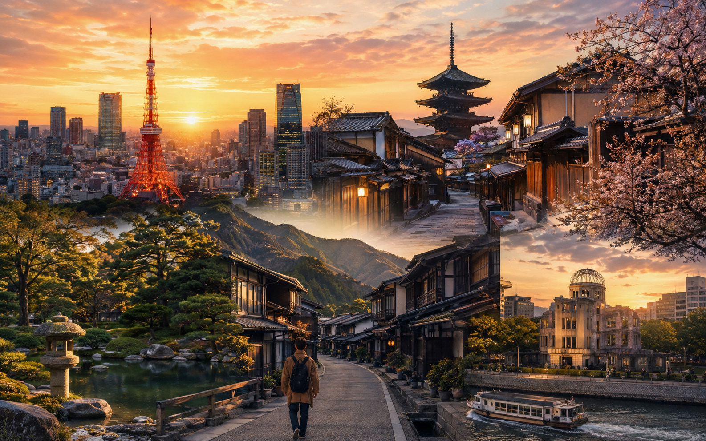
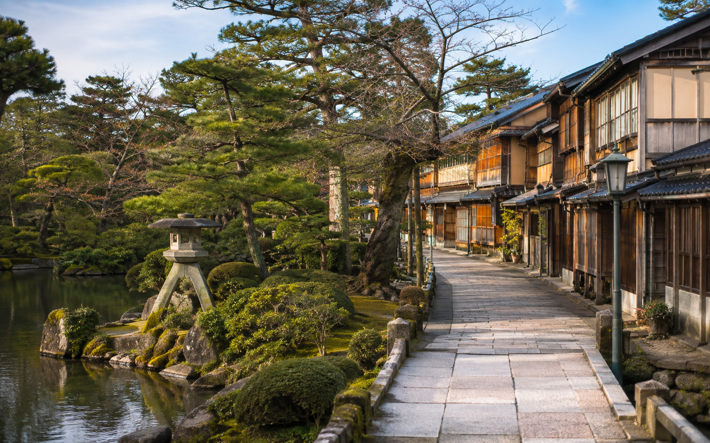
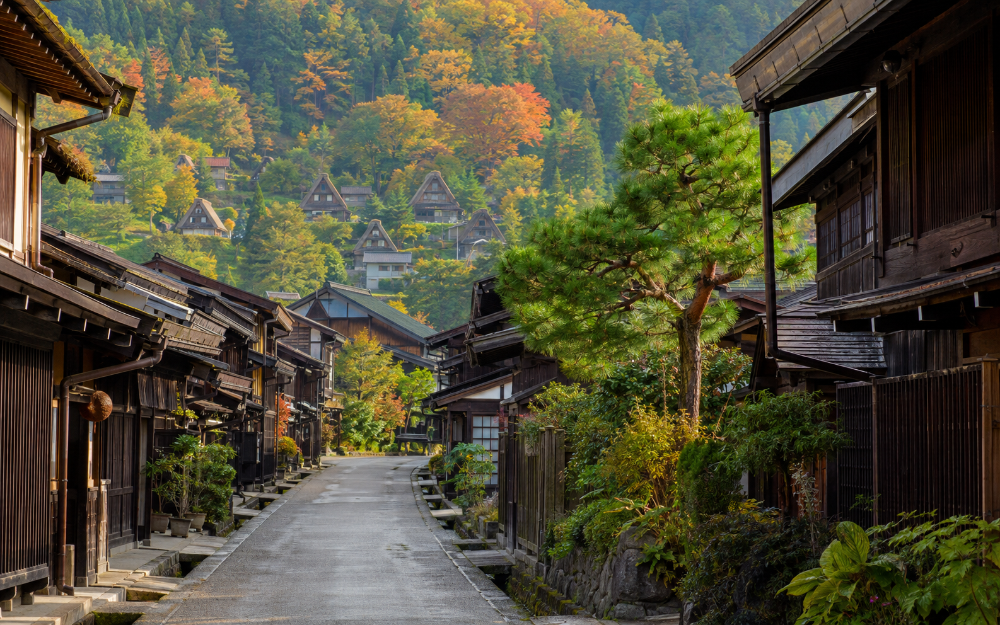

Japan 21-Day Itinerary: Three-Week First Trip

Three weeks in Japan gives first-time visitors enough time to go beyond Tokyo, Kyoto, and Osaka without turning the trip into a race. You can still see the major first-trip highlights, but 21 days also gives you room for smaller cities, mountain scenery, slower days, and places that are difficult to fit into a one- or two-week route.
For this itinerary, I recommend Tokyo → Kanazawa → Shirakawa-go → Takayama → Kyoto → Nara → Hiroshima → Miyajima → Osaka. Tokyo, Kanazawa, Takayama, Kyoto, Hiroshima, and Osaka are the six hotel bases. Shirakawa-go, Nara, and Miyajima fit into the route without adding another hotel stay.
This plan assumes 21 days and 20 nights. It is intentionally broader than our 14-day itinerary. Instead of simply adding more nights to the same Golden Route, the three-week trip adds Kanazawa and Takayama, giving you a different side of Japan before you continue to Kyoto and western Japan.
Japan 21-Day Itinerary at a Glance
| Day | Sleep | Main Plan |
|---|---|---|
| Day 1 | Tokyo | Arrival + easy neighborhood evening |
| Day 2 | Tokyo | Asakusa , Ueno and eastern Tokyo |
| Day 3 | Tokyo | Meiji Jingu , Harajuku, Shibuya and Shinjuku |
| Day 4 | Tokyo | Flexible Tokyo sightseeing day |
| Day 5 | Tokyo | Tokyo day trip or another city day |
| Day 6 | Kanazawa | Tokyo → Kanazawa + easy afternoon |
| Day 7 | Kanazawa | Full Kanazawa sightseeing |
| Day 8 | Takayama | Kanazawa → Shirakawa -go → Takayama |
| Day 9 | Takayama | Full Takayama day |
| Day 10 | Kyoto | Takayama → Kyoto + easy evening |
| Day 11 | Kyoto | Fushimi Inari, Kiyomizudera and Higashiyama |
| Day 12 | Kyoto | Arashiyama + second Kyoto area |
| Day 13 | Kyoto | Nara day trip |
| Day 14 | Kyoto | Flexible Kyoto day |
| Day 15 | Hiroshima | Kyoto → Hiroshima + Peace Memorial area |
| Day 16 | Hiroshima | Miyajima day trip |
| Day 17 | Osaka | Hiroshima → Osaka + easy evening |
| Day 18 | Osaka | Full Osaka sightseeing |
| Day 19 | Osaka | Himeji, Universal Studios or Osaka |
| Day 20 | Osaka | Flexible final full day |
| Day 21 | Departure | Easy morning + Kansai Airport |
Why This Three-Week Route Works?
A 21-day trip should give you something different from a 14-day trip.
The extra week lets you add a new region rather than simply increasing the number of attractions in Tokyo and Kyoto.
This route gives you:
- ✓Five nights in Tokyo
- ✓Two nights in Kanazawa
- ✓Two nights in Takayama
- ✓Five nights in Kyoto
- ✓Two nights in Hiroshima
- ✓Four nights in Osaka
- ✓Shirakawa-go as a route stop
- ✓Nara as a day trip
- ✓Miyajima as a day trip
- ✓Several flexible days
That is still only six hotel bases across three weeks.
You get more variety without packing your suitcase every night.
How This Route Differs from the 14-Day Itinerary?
The 14-day route focuses on:
Tokyo → Kyoto → Nara → Hiroshima → Miyajima → Osaka
The 21-day route adds:
Kanazawa → Shirakawa-go → Takayama
between Tokyo and Kyoto.
This changes the trip in a meaningful way.
You are no longer spending the entire journey in Japan's biggest cities and most famous Golden Route stops.
You get time for smaller historic areas and a slower section before reaching Kyoto.
Why Add Kanazawa and Takayama?
Three weeks is long enough to include another part of Japan without taking time away from the main first-trip cities.
Kanazawa and Takayama work well because they add a different type of experience.
Kanazawa Adds
- ✓Historic districts
- ✓Gardens
- ✓Traditional architecture
- ✓Markets
- ✓A smaller-city pace
Takayama Adds
- ✓Mountain-town atmosphere
- ✓Traditional streets
- ✓Local food
- ✓A slower travel day
- ✓Easy pairing with Shirakawa-go
This gives the middle of the trip a different feel from Tokyo, Kyoto, Osaka, and Hiroshima.
Why Shirakawa-go Is a Stop, Not Another Hotel Base?
I would not automatically stay overnight in Shirakawa-go on this first three-week route.
Instead, use it between Kanazawa and Takayama.
The route becomes:
Kanazawa → Shirakawa-go → Takayama
That allows you to see the village without introducing a seventh hotel base.
Luggage and transport need to be planned in advance, which we will cover when we reach Day 8.
Your Six Hotel Bases
Tokyo: 5 Nights
Tokyo gets arrival day plus four full days.
That gives you enough time for the major city areas and one optional day trip without making the first week exhausting.
Kanazawa: 2 Nights
Two nights gives you the arrival afternoon and one proper sightseeing day.
You do not need to rush through the city on the way to Takayama.
Takayama: 2 Nights
One transfer day plus a full day works well for a first visit.
This also creates a slower middle section before Kyoto.
Kyoto: 5 Nights
Five nights may sound generous, but one is the arrival night and one full day is used for Nara.
That leaves enough time for Kyoto without putting every temple into two crowded days.
Hiroshima: 2 Nights
This gives Hiroshima its own afternoon and Miyajima its own day.
Osaka: 4 Nights
The final four nights give you a full Osaka day plus room for Himeji, Universal Studios Japan, shopping, food, or simply a slower finish.
Best Arrival and Departure Setup
The easiest version of this route is:
Fly into Tokyo → travel through central and western Japan → fly home from Kansai
This allows the trip to keep moving forward.
You avoid returning all the way to Tokyo simply because your flight leaves from there.
Before booking, compare the complete cost of:
- ✓Tokyo round-trip flights
- ✓Multi-city flights
- ✓Return rail travel to Tokyo
- ✓Extra accommodation
- ✓Airport transfers
- ✓Total travel time
The cheapest airfare alone does not always produce the cheapest or easiest trip.
If you already booked a Tokyo round trip, you can still follow most of this itinerary. You will simply need to modify the final Osaka days and return to Tokyo before departure.
Day 1: Arrive in Tokyo
Keep Day 1 easy.
After an international flight, you may still need to deal with:
- ✓Immigration
- ✓Baggage
- ✓Customs
- ✓Airport transport
- ✓Mobile data
- ✓Money
- ✓Hotel check-in
- ✓Jet lag
Go to the hotel first.
Once you are settled, learn the closest station and explore your immediate neighborhood.
What to Do on the First Evening
Your plan depends on where you stay.
If your hotel is in Shinjuku, have dinner nearby and explore the surrounding streets.
If you stay around Shibuya, you could see the crossing and walk locally.
If you choose Ueno, explore the station area and nearby streets.
Keep the evening flexible.
I would not book a major timed attraction for the first night.
Day 2: Asakusa, Ueno and Eastern Tokyo
Start your first full day in Asakusa.
Morning: Asakusa
Focus on:
- ✓Sensoji
- ✓Kaminarimon
- ✓Nakamise area
- ✓Nearby streets
Starting earlier can give you more room before the area becomes busier.
Afternoon: Ueno
Continue to Ueno.
Choose based on your interests:
- ✓Ueno Park
- ✓A museum
- ✓Ameyoko
- ✓Shopping
- ✓Cafes
Do not try to complete every option.
Evening: Choose One Area
Add one nearby or convenient interest.
Good choices include:
Akihabara for gaming, anime, and electronics.
Tokyo Station and Marunouchi for a central-city evening.
Ginza for shopping.
Pick one rather than crossing Tokyo several times.
Day 3: Meiji Jingu, Harajuku, Shibuya and Shinjuku
Day 3 focuses on western Tokyo.
Morning: Meiji Jingu
Start with the shrine and surrounding forest area.
Give yourself time to enjoy the quieter setting before moving into busier neighborhoods.
Late Morning: Harajuku
Continue toward Harajuku.
Depending on your interests, spend time around:
- ✓Takeshita Street
- ✓Omotesando
- ✓Side streets
- ✓Shops
- ✓Cafes
Afternoon: Shibuya
Use several hours for:
- ✓Shibuya Crossing
- ✓Shopping
- ✓Cafes
- ✓Department stores
- ✓One booked viewpoint if wanted
If you book a timed attraction, avoid filling the same afternoon with several more reservations.
Evening: Shinjuku
Finish in Shinjuku.
Have dinner, explore the streets, shop, or choose a city viewpoint.
This route works well because you keep moving through western Tokyo instead of jumping back and forth.
Day 4: Flexible Tokyo Sightseeing
With three weeks available, you do not need to force every Tokyo highlight into the first two full days.
Use Day 4 for the parts of the city that best match your interests.
Option 1: Central Tokyo
You could focus on:
- ✓Tokyo Station
- ✓Marunouchi
- ✓Ginza
- ✓One museum
- ✓Shopping
Option 2: Anime and Gaming
Give Akihabara or another related area more time.
This works better than squeezing your main interests into one evening.
Option 3: Neighborhood Day
Choose fewer famous sights and spend more time walking, eating, shopping, and seeing everyday Tokyo.
Option 4: One Major Booked Experience
If you have a museum, observation deck, exhibition, or other activity that needs advance booking, Day 4 gives you room for it.
Day 5: Day Trip or Another Full Tokyo Day
Day 5 is the first major advantage of a 21-day itinerary.
You have enough time to take one side trip without sacrificing the main Tokyo days.
Choose one option.
Option 1: Kamakura
A good choice if you want temples, historic areas, and a change from central Tokyo.
Option 2: Nikko
Choose this if shrines, history, and a longer day trip appeal to you.
Option 3: Mount Fuji or Hakone
Choose the Fuji area if mountain views or an onsen experience are a major priority.
Option 4: Stay in Tokyo
There is nothing wrong with using all five nights for Tokyo.
If you prefer:
- ✓Shopping
- ✓Food
- ✓Museums
- ✓Neighborhoods
- ✓A slower pace
stay in the city.
Which Day 5 Option Would I Choose?
For a first three-week trip, I would choose based on what is missing from the rest of your route.
You already have historic Kyoto, Nara, Hiroshima, and smaller mountain destinations ahead.
So you do not need a day trip just because other itineraries include one.
If Mount Fuji is a personal priority, this is a good place to include it.
If not, another full Tokyo day can be just as useful.
Prepare for Kanazawa Before Bed
Day 6 begins the part of this trip that separates it from our shorter Japan itineraries.
Before sleeping:
- ✓Pack most of your luggage
- ✓Confirm your route to Kanazawa
- ✓Save your hotel details
- ✓Check luggage needs
- ✓Keep important documents and electronics in your day bag
After five nights in Tokyo, you are ready to leave the biggest city and begin the slower central-Japan section of the trip.
Day 6: Travel From Tokyo to Kanazawa
Day 6 starts the section that makes this three-week itinerary different from the 14-day route.
Leave Tokyo in the morning and travel to Kanazawa.
Once you arrive, go to the hotel first and leave your luggage.
Do not treat the transfer day like a full sightseeing day.
Afternoon: First Look at Kanazawa
Keep the afternoon simple.
Good first stops can include:
- ✓Omicho Market area
- ✓Central streets
- ✓Nearby shopping areas
- ✓A relaxed walk
If you arrive early enough, you can add one historic district, but I would not force a long list of sights into the day.
Evening in Kanazawa
Have dinner and keep the evening easy.
The purpose of Day 6 is to settle into a smaller city after several busy days in Tokyo.
Day 7: Full Kanazawa Day

Day 7 is your main Kanazawa sightseeing day.
A good structure is:
Morning: Kenrokuen
Start with Kenrokuen.
Give yourself enough time to walk rather than rushing through it for photos.
Late Morning: Kanazawa Castle Area
Continue toward Kanazawa Castle or the surrounding park area.
These places fit naturally together.
Lunch: Omicho Market or Central Kanazawa
Use the middle of the day for lunch.
Omicho Market can work well if you did not spend much time there on Day 6.
Afternoon: Historic District
Choose one or two areas such as:
- ✓Higashi Chaya
- ✓Nagamachi
- ✓Local craft areas
- ✓Smaller museums
You do not need every district.
Why Two Nights in Kanazawa Is Enough
Two nights gives you:
- ✓Arrival afternoon
- ✓One full sightseeing day
- ✓A calmer pace
- ✓No need for a third hotel night
This makes Kanazawa feel like a real destination without making the itinerary too slow.
Day 8: Kanazawa to Shirakawa-go to Takayama
Day 8 is one of the most important transfer days in this itinerary.
The route is:
Kanazawa → Shirakawa-go → Takayama
The main planning issue is luggage.
Handle Your Luggage Before Leaving Kanazawa
Do not arrive in Shirakawa-go with a large suitcase unless you have already checked how you will manage it.
You have several options:
Option 1: Forward the Main Suitcase to Takayama
This is often the easiest approach.
Keep a small day bag with:
- ✓Passport
- ✓Phone
- ✓Charger
- ✓Medicine
- ✓Wallet
- ✓Water
- ✓Anything needed before the suitcase arrives
Option 2: Use Luggage Storage
If suitable storage is available for your bag size, leave it while you explore.
Option 3: Travel With a Small Bag
If you already pack light, the transfer becomes much easier.
Plan this before Day 8.
Shirakawa-go Stop
Use Shirakawa-go as a sightseeing stop rather than another overnight base.
Spend several hours exploring:
- ✓Traditional houses
- ✓Village streets
- ✓Scenic viewpoints
- ✓Local food
- ✓Surrounding landscape
You do not need to cover every corner.
The purpose is to experience the village properly, then continue.
Continue to Takayama
Later in the day, continue to Takayama.
Once you arrive:
- ✓Check in
- ✓Collect luggage if forwarded
- ✓Walk around near the hotel
- ✓Have dinner
- ✓Keep the evening light
After a multi-stop travel day, I would not add major sightseeing.
Why I Do Not Add a Shirakawa-go Hotel Night
A night there can be memorable, but it creates another hotel base.
For this first three-week route, I prefer:
Kanazawa → Shirakawa-go → Takayama
instead of:
Kanazawa → Shirakawa-go hotel → Takayama
That keeps the trip easier to manage.
Day 9: Full Takayama Day

Day 9 is intentionally slower.
After Tokyo, Kanazawa, and a multi-stop transfer, Takayama gives the trip a different rhythm.
Morning: Old Town
Start with the historic streets.
Take your time.
You can explore:
- ✓Traditional buildings
- ✓Shops
- ✓Local food
- ✓Small craft stores
- ✓Morning market areas
Midday: Local Lunch
Use lunch as part of the experience rather than rushing to another sight.
Afternoon: Choose One Direction
You could use the afternoon for:
- ✓More old-town walking
- ✓A local museum
- ✓A temple area
- ✓A quieter neighborhood
- ✓Rest
Do not turn Takayama into another checklist day.
Why Takayama Belongs in the 21-Day Route
This is one of the clearest differences from the shorter itineraries.
The 7-, 10-, and 14-day routes are mainly about the classic first-trip corridor.
The three-week route has enough time for a slower mountain-town section.
That makes the extra week feel meaningful.
Day 10: Travel From Takayama to Kyoto
Day 10 is another transfer day.
Leave Takayama in the morning and continue toward Kyoto.
The exact route may involve a connection, so confirm the current train schedule before travel.
Once you reach Kyoto, go to your hotel and leave the luggage.
Afternoon and Evening in Kyoto
Keep the first Kyoto hours light.
Good options include:
- ✓Downtown Kyoto
- ✓Kamo River
- ✓Nishiki Market area
- ✓Teramachi
- ✓Gion
- ✓Pontocho
Choose based on arrival time and hotel location.
Do not add Fushimi Inari or Arashiyama on top of a long transfer.
Day 11: Fushimi Inari, Kiyomizudera and Higashiyama
Day 11 is your main eastern Kyoto day.
Early Morning: Fushimi Inari
Start early.
You do not need to complete the entire mountain trail unless hiking is a priority.
Spend enough time to enjoy the shrine and part of the torii route.
Late Morning: Higashiyama
Continue toward eastern Kyoto.
Focus on:
- ✓Kiyomizudera
- ✓Sannenzaka
- ✓Ninenzaka
- ✓Yasaka Pagoda area
- ✓Nearby historic streets
Afternoon: Yasaka Shrine and Gion
Continue toward Yasaka Shrine and Gion.
Keep the route moving in one direction.
This reduces unnecessary transport.
Day 12: Arashiyama and a Second Kyoto Area
Start Day 12 in Arashiyama.
Morning: Arashiyama
Spend time around:
- ✓Bamboo grove area
- ✓Tenryuji
- ✓River area
- ✓Local streets
Do not treat the bamboo grove as the only reason to visit.
Afternoon: Choose One Area
Pick one:
- ✓Northern Kyoto
- ✓Philosopher's Path
- ✓Downtown Kyoto
- ✓More Higashiyama
- ✓A slower cafe and shopping afternoon
Three weeks gives you enough time to make this choice based on your energy.
Day 13: Nara Day Trip
Use Day 13 for Nara.
Because Kyoto remains your hotel base, you do not need to manage luggage.
A simple route can focus on:
- ✓Nara Park
- ✓Todaiji
- ✓Nearby historic areas
- ✓One selected temple or garden
Stay for lunch and give the day enough time.
Then return to Kyoto.
Why Nara Gets Its Own Day
In the shorter itineraries, Nara has to compete with hotel transfers.
Here, it does not.
That gives you:
- ✓More time
- ✓Less luggage stress
- ✓A calmer pace
- ✓An easier evening afterward
This is another way the 21-day itinerary should feel better, not just longer.
Day 14: Flexible Kyoto Day
Day 14 is one of the most useful days in the whole itinerary.
Do not automatically fill it with another major day trip.
Use it based on what you still want from Kyoto.
Option 1: More Temples and Gardens
Choose areas you skipped on Days 11 and 12.
Option 2: Slower Kyoto
Use the day for:
- ✓Cafes
- ✓Shopping
- ✓Neighborhood walking
- ✓A garden
- ✓Rest
Option 3: Uji
If tea culture and a smaller nearby destination interest you, this can work as a lighter side trip.
Option 4: Catch-Up Day
Use it for anything affected by weather, tiredness, or timing earlier in the trip.
This flexibility is one of the main benefits of a three-week first visit.
Prepare for Hiroshima
Before bed, pack most of your luggage and confirm the next day's route.
Day 15 moves you west again.
At this point, you have already experienced:
- ✓Tokyo
- ✓Kanazawa
- ✓Shirakawa-go
- ✓Takayama
- ✓Kyoto
- ✓Nara
The final week now adds Hiroshima, Miyajima, and Osaka without introducing another new region.
Day 15: Travel From Kyoto to Hiroshima
Day 15 moves the trip west again.
I would leave Kyoto in the morning and head to Hiroshima.
Once you arrive, go to your hotel first and leave your luggage.
Keep the rest of the day focused on Hiroshima itself rather than adding another side trip.
Afternoon: Peace Memorial Area
Give enough time to:
- ✓Peace Memorial Park
- ✓Atomic Bomb Dome
- ✓Peace Memorial Museum
- ✓Riverside areas nearby
This is not a part of the itinerary I would rush.
The museum can be emotionally heavy, so leave some space afterward rather than scheduling another major attraction immediately.
Evening in Hiroshima
Keep the evening simple.
Have dinner, walk nearby, and rest.
If you want to try a local dish, Hiroshima-style okonomiyaki is one popular option.
Day 16: Miyajima Day Trip
Use Day 16 for Miyajima.
Because Hiroshima remains your hotel base, you do not need another check-in or suitcase move.
Morning: Travel to Miyajima
Leave reasonably early.
Once there, focus on:
- ✓Itsukushima Shrine
- ✓Waterfront views
- ✓Historic streets
- ✓Local food
- ✓Scenic walking areas
Depending on your energy, you can add another temple or viewpoint.
Check the Tide Schedule
The famous torii gate looks different at high and low tide.
If that view matters to you, check the tide timing before you go.
I would not plan the entire day around one photo, but it is useful to know what conditions to expect.
Evening: Return to Hiroshima
Return to Hiroshima and keep the final evening relaxed.
By now, you have already covered a broad mix of Japan without adding too many hotel bases.
Day 17: Hiroshima to Osaka
Day 17 is your final major hotel transfer.
Leave Hiroshima in the morning and continue to Osaka.
Once you arrive:
- ✓Check in
- ✓Leave your luggage
- ✓Learn the nearest useful station
- ✓Keep the afternoon fairly light
Afternoon: Namba or Shinsaibashi
Use the afternoon for:
- ✓Shopping
- ✓Cafes
- ✓Walking
- ✓Food
- ✓Exploring near the hotel
Evening: Dotonbori
Finish around Dotonbori.
This is a good place to enjoy Osaka's evening atmosphere without turning the first day into a full sightseeing schedule.
Day 18: Full Osaka Sightseeing Day
Day 18 is your main Osaka city day.
I would keep it simple:
One main daytime area + one evening area.
Morning: Choose One Main Area
You could start with:
Osaka Castle area if history interests you.
or
Umeda if you prefer modern city views and shopping.
Pick one rather than crossing the city several times.
Afternoon: Central Osaka
Continue toward Namba, Shinsaibashi, or another central area.
Use the afternoon for:
- ✓Shopping
- ✓Local streets
- ✓Cafes
- ✓Food
- ✓One selected attraction
Evening: Food and Nightlife
Return to Dotonbori, Namba, or another area you enjoyed.
Leave enough free time for dinner.
Osaka works better when the food experience is not squeezed between too many attractions.
Day 19: Himeji, Universal Studios or More Osaka
Day 19 is deliberately flexible.
Choose one based on your priorities.
Option 1: Himeji Day Trip
Choose Himeji if Himeji Castle is a major interest.
It works well from Osaka without another hotel move.
Keep the day focused on Himeji rather than trying to combine several cities.
Option 2: Universal Studios Japan
If the theme park matters to you, make this the main plan for the day.
Do not try to fit a full Osaka sightseeing schedule around it.
Option 3: More Osaka
This is a strong choice if you prefer:
- ✓Food
- ✓Shopping
- ✓Neighborhoods
- ✓Cafes
- ✓A slower pace
Not every extra day needs to become a day trip.
Day 20: Final Flexible Day
Day 20 is one of the biggest advantages of having three weeks.
You can use it based on how the trip has actually gone.
Option 1: Buffer Day
Use it for anything affected by:
- ✓Weather
- ✓Tiredness
- ✓A missed attraction
- ✓A changed booking
- ✓A place you discovered during the trip
Option 2: Shopping Day
Keep the final full day simple and buy anything you want before flying home.
Option 3: More Osaka
Explore areas you skipped earlier.
Option 4: Another Carefully Chosen Day Trip
Only add another side trip if you still have the energy and a clear reason.
Do not add one simply because the calendar has space.
Why a Buffer Day Matters on a 21-Day Trip
Longer trips create more chances for:
- ✓Bad weather
- ✓Travel delays
- ✓Tiredness
- ✓Changed plans
- ✓Unexpected discoveries
A flexible day gives the itinerary room to adapt.
That makes it more useful than filling every day months in advance.
Day 21: Easy Morning and Departure
Keep your final morning light.
If you are flying from Kansai International Airport, leave enough time for:
- ✓Hotel check-out
- ✓Airport transport
- ✓Airline check-in
- ✓Security
- ✓Immigration procedures if required
Use the morning only for something near your hotel.
Good options include:
- ✓Breakfast
- ✓A short walk
- ✓Last-minute shopping
- ✓One nearby stop
Do not cross Osaka for one final attraction if it makes the airport transfer stressful.
If You Are Flying Home From Tokyo
If you booked a Tokyo round trip, I would adjust the end of the itinerary before arrival.
The safer option is usually to return to Tokyo on Day 20 and sleep there before the international flight.
You can then use Day 21 for departure.
I would avoid a tight:
Osaka → Tokyo → airport → international flight
schedule on the same day.
A three-week trip gives you enough time to plan a safer ending.
Should You Add More Destinations?
This is where three-week itineraries often become too ambitious.
You may see routes that also add:
- ✓Hakone
- ✓Nagoya
- ✓Koyasan
- ✓Matsumoto
- ✓Kobe
- ✓Another Alpine town
- ✓Several extra one-night stays
You can do that.
I would not make it the default first-trip plan.
Our route already includes:
- ✓Tokyo
- ✓Kanazawa
- ✓Shirakawa-go
- ✓Takayama
- ✓Kyoto
- ✓Nara
- ✓Hiroshima
- ✓Miyajima
- ✓Osaka
That is nine distinct destinations or stops.
You do not need to prove the value of a 21-day trip by adding five more.
What I Would Skip on This First Three-Week Route
I would normally leave these for another trip:
- ✓Hokkaido
- ✓Okinawa
- ✓Kyushu
- ✓Shikoku
- ✓Several remote mountain regions
- ✓Too many one-night stays
These destinations can be excellent.
The issue is geography.
Adding distant regions can increase flight, train, and hotel complexity without improving the first-trip experience.
How Much Should You Budget for 21 Days?
A rough in-country planning range is:
Budget traveler: around ¥260,000–¥390,000 per person
Mid-range traveler: around ¥430,000–¥650,000 per person
International airfare is separate.
Your final cost depends on:
- ✓Hotel level
- ✓Season
- ✓Long-distance transport
- ✓Food
- ✓Paid attractions
- ✓Shopping
- ✓Day trips
Because 21 days includes more hotel nights and transport, small daily spending differences can have a bigger effect on the final total.
Use Japan Trip Cost: Budget for 7, 10 and 14 Days as a starting point, then extend the daily budget for the extra week.
Do You Need the JR Pass?
Do not assume that a long itinerary automatically makes the nationwide JR Pass worthwhile.
This route includes several long-distance journeys, but the correct decision depends on:
- ✓Current pass price
- ✓Exact train routes
- ✓Travel dates
- ✓Regional passes
- ✓Individual ticket costs
Price the itinerary first.
Then compare it with the current pass options.
Use Japan Rail Pass: Is the JR Pass Worth It? before buying.
Luggage Planning Matters More on a Three-Week Trip
Six hotel bases is manageable, but luggage can become tiring if you overpack.
The most important transfer is:
Kanazawa → Shirakawa-go → Takayama
because Shirakawa-go is a sightseeing stop.
Consider forwarding luggage or checking storage options before that day.
For Nara and Miyajima, keep your main suitcase at the hotel.
Packing for Three Weeks
Do not assume you need 21 complete outfits.
Laundry can reduce:
- ✓Suitcase size
- ✓Weight
- ✓Hotel-transfer stress
- ✓Space needed for souvenirs
Pack for the season and plan to wash clothes during the trip.
Use What to Pack for Japan: First-Time Visitor Packing List for the full checklist.
How to Adjust This Route
If You Want More Tokyo
Skip the Day 5 side trip and keep the full day in Tokyo.
If You Want Mount Fuji
Use Day 5 for a Fuji-area trip instead of adding another hotel.
If Kanazawa Interests You More Than Takayama
Add another Kanazawa night and reduce Takayama.
If You Prefer Mountain Towns
Give Takayama more time and reduce one flexible Osaka day.
If You Want More Kyoto
Use Day 14 fully in Kyoto and skip Uji or another side trip.
If You Love Food and Nightlife
Keep Days 19 and 20 in Osaka.
If Theme Parks Matter
Use Day 19 for Universal Studios Japan.
Common Mistakes With a 21-Day Japan Itinerary
Trying to See Every Region
Three weeks is long, but Japan is still much larger than one itinerary.
Changing Hotels Too Often
A 21-day trip does not need 10 hotel bases.
Treating Every Flexible Day as Empty Space
Flexibility is part of the plan.
Overpacking
Large luggage becomes more annoying after several transfers.
Adding Too Many Day Trips
Day trips still use time and energy.
Ignoring Rest
Three weeks of early mornings and late nights can make the final week much less enjoyable.
Planning Every Meal Before Arrival
Keep room for places you discover while traveling.
Use RoamPlans to Build the Trip
Use the Travel Itinerary Builder to place these 21 days into your actual calendar.
Then use the Trip Cost Estimator to compare versions such as:
- ✓Kanazawa + Takayama included
- ✓More Tokyo instead of a day trip
- ✓Himeji vs extra Osaka
- ✓Universal Studios vs free day
- ✓Different hotel levels
This makes it easier to see whether the route still matches your budget and preferred pace.
Frequently Asked Questions
No. Three weeks works very well if you want to see more than the main Tokyo-Kyoto-Osaka route while keeping a reasonable pace.
A balanced route is Tokyo → Kanazawa → Shirakawa-go → Takayama → Kyoto → Nara → Hiroshima → Miyajima → Osaka.
Around six works well for this route: Tokyo, Kanazawa, Takayama, Kyoto, Hiroshima, and Osaka.
No. Japan has far more regions than you can explore properly in 21 days. Focus on one logical route.
I would not add it to the default first-trip route. It introduces another distant region and more transport.
Yes. On a three-week trip, Kanazawa gives you a smaller-city experience that contrasts well with Tokyo, Kyoto, and Osaka.
Yes. Two nights gives you a transfer afternoon and one full day without making the itinerary too slow.
You can, but I prefer using it as a stop between Kanazawa and Takayama for this itinerary.
Yes. It works well as a day trip from Kyoto without another hotel move.
Four nights works well at the end because it gives you time for Osaka, one optional day trip or theme park, and a flexible final day.
That is usually the cleanest structure for this route because it avoids returning across the country at the end.
Final Thoughts
A three-week first trip to Japan should feel broader, not simply busier. Tokyo, Kanazawa, Shirakawa-go, Takayama, Kyoto, Nara, Hiroshima, Miyajima, and Osaka give you a strong mix of large cities, historic areas, mountain towns, and slower travel while keeping the route geographically sensible. Use the extra week to add variety and flexibility rather than more hotel changes.